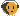

MOON
TTY
MOON
TTY
MOON
TTY
Every Claude Code session and every subagent it sends out,
live on one canvas.
exact status
branch per mission
survives restarts
MIT
MOONTTY
Every Claude Code session and every subagent it sends out, live on one canvas.